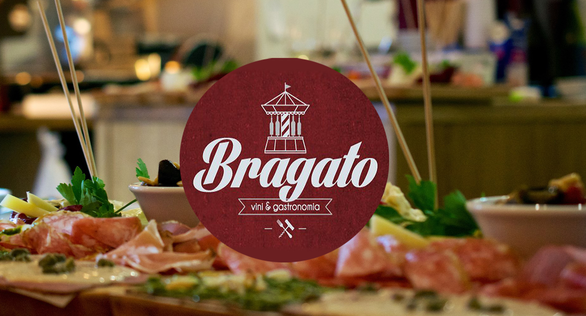
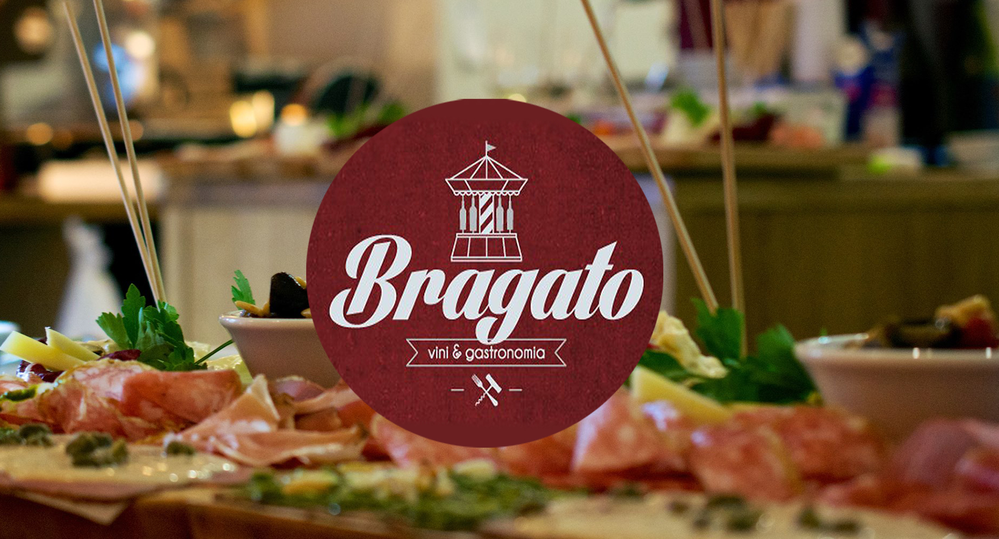

A cozinha oferece um menu que muda diariamente, com uma seleção deliberadamente limitada de pratos quentes e leves de massas, bem como pratos frios e saladas, por exemplo, carpaccio de carne e carne, salada pulpo com rúcula, bem como bolos caseiros. Além de vinhos selecionados para acompanhar tudo!
De segunda à sexta: 12:00 às 23:00
Sábado: 16:00 às 23:00
Domingo: Fechado
Marisa Lopes:
Conheci por meio de um amigo! Um dos melhores italianos da cidade! Grande anfitrião que também é o cozinheiro e especialista em vinhos! Posso recomendar sem reservas!
Nota:
Lucca Peter:
Adoramos ir a Bragato; desfrute do belo ambiente, da excelente cozinha italiana, da vasta gama de vinhos e do serviço comprometido e cordial. A venda fora de casa é um ponto brilhante na era Corona! 👍
Nota:
Susanne Louis:
Não é o restaurante mais barato. É muito bom. A comida é deliciosa e o serviço é muito amigável.
Nota:

Dahlmannstraße 7, 10629 Berlin, Alemanha